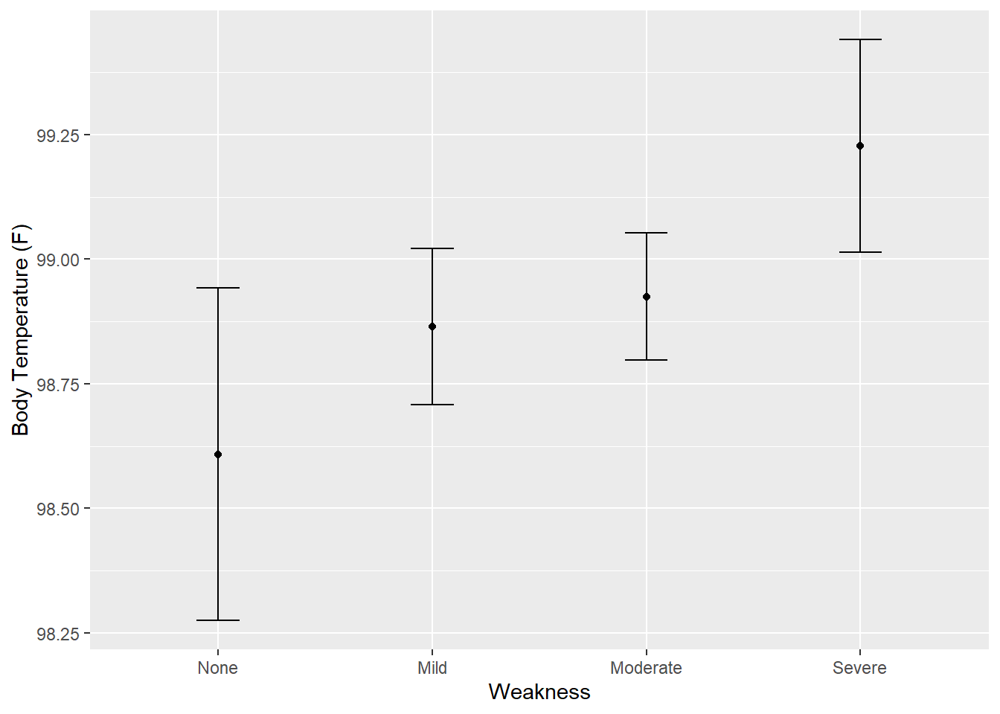

library(here)
library(tidymodels)
library(performance)
library(tidyverse)Model fitting
flu <- readRDS(here("fluanalysis/data/processed_data/flu.rds"))Univariate model for
lm_mod <- linear_reg() %>%
set_engine("lm") %>%
fit(BodyTemp ~ Weakness, data = flu)
tidy(lm_mod)# A tibble: 4 × 5
term estimate std.error statistic p.value
<chr> <dbl> <dbl> <dbl> <dbl>
1 (Intercept) 98.6 0.170 580. 0
2 WeaknessMild 0.256 0.188 1.37 0.172
3 WeaknessModerate 0.317 0.182 1.74 0.0816
4 WeaknessSevere 0.619 0.202 3.07 0.00221glance(lm_mod)# A tibble: 1 × 12
r.squ…¹ adj.r…² sigma stati…³ p.value df logLik AIC BIC devia…⁴ df.re…⁵
<dbl> <dbl> <dbl> <dbl> <dbl> <dbl> <dbl> <dbl> <dbl> <dbl> <int>
1 0.0159 0.0119 1.19 3.92 0.00857 3 -1160. 2331. 2354. 1027. 726
# … with 1 more variable: nobs <int>, and abbreviated variable names
# ¹r.squared, ²adj.r.squared, ³statistic, ⁴deviance, ⁵df.residualMultivariate model (full)
lm_full <- linear_reg() %>%
set_engine("lm") %>%
fit(BodyTemp ~ . ,data = flu)
tidy(lm_full)# A tibble: 38 × 5
term estimate std.error statistic p.value
<chr> <dbl> <dbl> <dbl> <dbl>
1 (Intercept) 97.9 0.304 322. 0
2 SwollenLymphNodesYes -0.165 0.0920 -1.80 0.0727
3 ChestCongestionYes 0.0873 0.0975 0.895 0.371
4 ChillsSweatsYes 0.201 0.127 1.58 0.114
5 NasalCongestionYes -0.216 0.114 -1.90 0.0584
6 CoughYNYes 0.314 0.241 1.30 0.193
7 SneezeYes -0.362 0.0983 -3.68 0.000249
8 FatigueYes 0.265 0.161 1.65 0.0996
9 SubjectiveFeverYes 0.437 0.103 4.22 0.0000271
10 HeadacheYes 0.0115 0.125 0.0913 0.927
# … with 28 more rowsglance(lm_full)# A tibble: 1 × 12
r.squ…¹ adj.r…² sigma stati…³ p.value df logLik AIC BIC devia…⁴ df.re…⁵
<dbl> <dbl> <dbl> <dbl> <dbl> <dbl> <dbl> <dbl> <dbl> <dbl> <int>
1 0.129 0.0860 1.14 3.02 4.20e-8 34 -1116. 2304. 2469. 909. 695
# … with 1 more variable: nobs <int>, and abbreviated variable names
# ¹r.squared, ²adj.r.squared, ³statistic, ⁴deviance, ⁵df.residualComparing model performance for univariate vs multivariate linear model.
compare_performance(lm_mod, lm_full)# Comparison of Model Performance Indices
Name | Model | AIC (weights) | AICc (weights) | BIC (weights) | R2 | R2 (adj.) | RMSE | Sigma
------------------------------------------------------------------------------------------------------
lm_mod | _lm | 2330.7 (<.001) | 2330.7 (<.001) | 2353.6 (>.999) | 0.016 | 0.012 | 1.186 | 1.189
lm_full | _lm | 2303.8 (>.999) | 2307.7 (>.999) | 2469.2 (<.001) | 0.129 | 0.086 | 1.116 | 1.144The full model appears to be a better fit than univariate model with a lower AIC of 2307.8 and higher R2(adj.) of 0.086.
Let’s try to make some predictions for the full model. We’ll use the mean body temperature we found earlier
new_points <- expand.grid(BodyTemp = 98.94,
Weakness = c("None", "Mild", "Moderate", "Severe"))
##Mean prediction
mean_pred <- predict(lm_mod, new_data = new_points)
mean_pred# A tibble: 4 × 1
.pred
<dbl>
1 98.6
2 98.9
3 98.9
4 99.2#Confidence intervals
conf_int_pred <- predict(lm_mod,
new_data = new_points,
type = "conf_int")
conf_int_pred# A tibble: 4 × 2
.pred_lower .pred_upper
<dbl> <dbl>
1 98.3 98.9
2 98.7 99.0
3 98.8 99.1
4 99.0 99.4plot_data <-
new_points %>%
bind_cols(mean_pred) %>%
bind_cols(conf_int_pred)
ggplot(plot_data, aes(x = Weakness)) +
geom_point(aes(y = .pred)) +
geom_errorbar(aes(ymin = .pred_lower,
ymax = .pred_upper),
width = .2) +
labs(y = "Body Temperature (F)")
Fitting univariate model - Logistic regression
log_mod <- logistic_reg() %>%
set_engine("glm") %>%
fit(Nausea ~ Myalgia, data = flu)
tidy(log_mod)# A tibble: 4 × 5
term estimate std.error statistic p.value
<chr> <dbl> <dbl> <dbl> <dbl>
1 (Intercept) -1.37 0.280 -4.90 0.000000980
2 MyalgiaMild 0.291 0.321 0.905 0.366
3 MyalgiaModerate 0.926 0.302 3.07 0.00217
4 MyalgiaSevere 1.42 0.337 4.22 0.0000244 #Results
glance(log_mod)# A tibble: 1 × 8
null.deviance df.null logLik AIC BIC deviance df.residual nobs
<dbl> <int> <dbl> <dbl> <dbl> <dbl> <int> <int>
1 945. 729 -456. 920. 939. 912. 726 730Fitting the full model - logistic regression
log_full <- logistic_reg() %>%
set_engine("glm") %>%
fit(Nausea ~ ., data = flu)
tidy(log_full)# A tibble: 38 × 5
term estimate std.error statistic p.value
<chr> <dbl> <dbl> <dbl> <dbl>
1 (Intercept) 0.223 7.83 0.0285 0.977
2 SwollenLymphNodesYes -0.251 0.196 -1.28 0.200
3 ChestCongestionYes 0.276 0.213 1.30 0.195
4 ChillsSweatsYes 0.274 0.288 0.952 0.341
5 NasalCongestionYes 0.426 0.255 1.67 0.0944
6 CoughYNYes -0.140 0.519 -0.271 0.787
7 SneezeYes 0.177 0.210 0.840 0.401
8 FatigueYes 0.229 0.372 0.616 0.538
9 SubjectiveFeverYes 0.278 0.225 1.23 0.218
10 HeadacheYes 0.331 0.285 1.16 0.245
# … with 28 more rowsglance(log_full)# A tibble: 1 × 8
null.deviance df.null logLik AIC BIC deviance df.residual nobs
<dbl> <int> <dbl> <dbl> <dbl> <dbl> <int> <int>
1 945. 729 -376. 821. 982. 751. 695 730Comparing model performance for univariate vs multiple logistic regression model.
compare_performance(log_mod, log_full)# Comparison of Model Performance Indices
Name | Model | AIC (weights) | AICc (weights) | BIC (weights) | Tjur's R2 | RMSE | Sigma | Log_loss | Score_log | Score_spherical | PCP
----------------------------------------------------------------------------------------------------------------------------------------------
log_mod | _glm | 920.3 (<.001) | 920.3 (<.001) | 938.7 (>.999) | 0.044 | 0.466 | 1.121 | 0.625 | -110.929 | 0.006 | 0.565
log_full | _glm | 821.5 (>.999) | 825.1 (>.999) | 982.2 (<.001) | 0.247 | 0.414 | 1.040 | 0.515 | -Inf | 0.002 | 0.658The full model appears to be a better fit than the univariate model, with an lower AIC of 821.5.